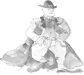

Implementation Implementation |
Waiting for Godot continued
Introduction | Curriculum links | Writer | Activities: Writer | World of play | Activities: World of play | Actors |
Activities: Actors | Design | Activities: Design | Script extracts
Design: set and costume
Jump to > Set designer / Costume designer
Set designer: John Parker
Q: Beckett describes the setting of Waiting for Godot as follows: "A country road. A tree. Evening." On one hand these seem to be rather
ambiguous instructions, on the other they don't seem to leave much room for interpretation. How did you go about designing the set for
this production?
JP: I had designed Rosencrantz and Guildenstern are Dead that draws on Godot. The idea of two people waiting for something somewhere,
and not knowing too much about their predicament, is similar. I took "a country road" to mean a kind of limbo on the way from somewhere
to somewhere. You have to have a tree because of the biblical references – tree of life, Calvary, etc. The time of day is very important
also.
My idea [to use a] power line [in the set design] was partly to emphasise the horizontal, linear nature of the road, but also to suggest
some sort of private communication that the protagonists aren't party to.
Q: What research do you do before starting a design, and how closely do you normally work with the director?
JP: We talked of it being post apocalyptical, or post 9/11, and also of it being set under the Hopetown Bridge to make it relevant to
homeless street people now. The tree went through a time of being like the twisted steel left at the Twin Towers site at Ground Zero,
but we settled for a nebulous, timeless world of the play, like a no-man's-land.
I have worked with [the director] Colin McColl a lot before, and we operate on an intuitive, shorthand level.
I looked at the paintings of Magritte and photos of the American Midwest. I wanted to convey the idea of infinity and of an endless
road. The quality of the clouds changed from photo-realist technicolour, to painterly blue brushstrokes, back to photo-realist
monochrome.

Costume designer: Elizabeth Whiting
Note: The drawings below are some of Elizabeth's designs for the ATC production.
Q: What is the costume designer's role?
EW: Waiting for Godot is an intriguing play. Each [member of the] creative [team] involved with the piece tends to see a different facet
of the playwright's original vision, which they bring to the production. I see the costume designer's role as facilitating this
ambiguity. Nothing must be overstated, but the characters need the depth of a past history to make the dilemma of each personality
non-verbal.
Q: How do you start the design process?
EW: The text is the starting point for all design. I read the script several times, noting any costume or character references. I talk
to the director and other members of the design team about original concepts. At this meeting I bring visual references I have found,
which suggest ideas I would like to explore. Some ideas will prove to be triggers for the final concept.
Q: Waiting for Godot has been performed many times across the world for nearly half a century. How influenced are you by the design of
previous productions? Is the play's huge theatrical history an inspiration or a burden? With such plays, do you ever feel the pressure
to come up with a completely new interpretation?
EW: I try to ignore the design of past productions as I feel design for theatre is very much of the time and place of the
performance. The play's huge theatrical history is an inspiration as I feel it is my job to excite a new audience with a fresh
look at a classic. I don't feel it necessary to force a completely new interpretation on the play, but I feel the design evolves
anew from the fresh combination of creatives working on it.
Q: What kind of research can one do for a play like Waiting for Godot?
EW: The research is very much text based. I need to understand the references in the text and understand, as much as possible, the
intent of the writer. I do also look at the period in which the play was actually written, particularly as the writer calls for bowler
hats and garments that are not actually worn today.

Q: Does the casting of the play have an influence on costume design?
EW: The casting of the play has a huge influence on the costume design. In fact, because of the strength of the cast, I am involving the actors as much as possible in the process. This means that
the design process is much more organic than usual.
|
Printing this page
To download and print this page, select from Word or PDF formats:
|
next: Activities: Design | Back to top
|